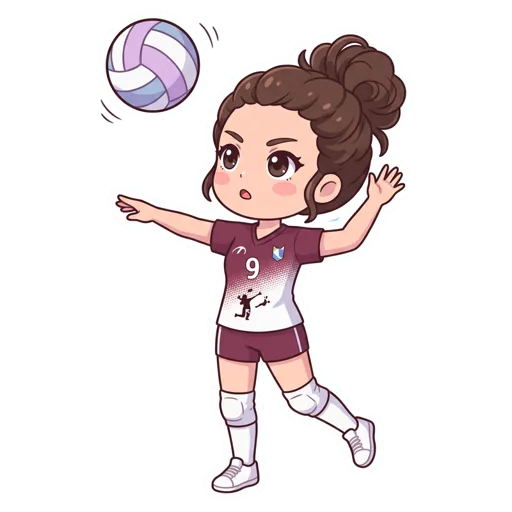

In campo
+84 passi presi in campo.

Ultim'ora
dom 13 dicembre
Prossima partita
Volley Girasole
Alle 9:00, in trasferta
tra 27 giorni- 3
- partite
- 2
- vinte
- 6
- dieci minuti
a novembre
Classifica Under 14
| Pos | Squadra | Pt | G | V |
|---|---|---|---|---|
| 1 | Pallavolo Aurora | 9 | 3 | 3 |
| 2 | U14R-EVOLUTION | 6 | 3 | 2 |
| 3 | Volley Girasole | 5 | 3 | 2 |
| 4 | Polisportiva Tre Torri | 4 | 3 | 1 |
| 5 | Volley Fiume | 3 | 3 | 1 |
| 6 | Pallavolo Castello | 0 | 3 | 0 |
U14 Femminile girone A, dal portale FIPAV. Aggiornata il 16 novembre.
Partite
- Volley Fiume14 novembre, da approvare3-1
- Pallavolo Aurora7 novembre1-3
- Pallavolo Castello31 ottobre3-0